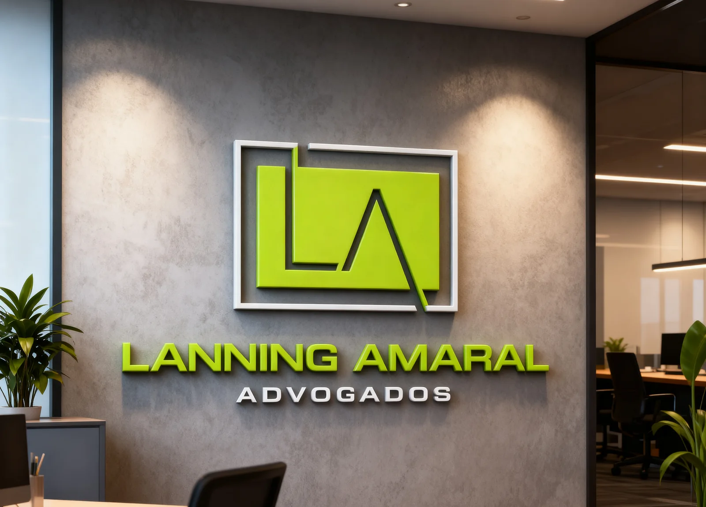

Atuação jurídica técnica e responsável em Jaciara/MT e região.
Atendimento presencial e online em demandas previdenciárias, trabalhistas, cíveis, familiares, bancárias, rurais, empresariais, criminais e contra o Poder Público.
Situações que costumam exigir orientação jurídica
Escolha a situação mais próxima da sua demanda para conhecer a área relacionada e organizar o primeiro contato.
Fui prejudicado por banco ou cobrança indevida
Descontos não reconhecidos, negativação, cobrança abusiva ou falha em serviço.
Tenho problema com INSS
Benefício negado, aposentadoria, incapacidade, pensão ou BPC/LOAS.
Preciso resolver uma questão trabalhista
Verbas rescisórias, vínculo, descontos, acidente ou audiência trabalhista.
Tenho uma demanda de família
Divórcio, guarda, alimentos, visitas, partilha ou medida urgente.
Recebi cobrança, execução, bloqueio ou notificação
Análise de documentos, prazos e medidas cabíveis no caso concreto.
Sou produtor rural e preciso de orientação jurídica
Contratos rurais, crédito, posse, propriedade, safra ou atividade produtiva.
Preciso de inventário, alvará, RPV ou precatório
Regularização de bens, levantamento de valores e acompanhamento de pagamentos judiciais.
Preciso de defesa ou orientação criminal
Intimação, delegacia, audiência, cautelares, ação penal ou investigação.
Departamentos organizados por necessidade jurídica
A atuação do escritório é dividida em departamentos para facilitar a compreensão do cliente e o direcionamento do atendimento.
Informações iniciais, documentos e próximos passos com organização
O primeiro contato pode ser feito pelo WhatsApp, formulário ou assistente de atendimento. A equipe avalia as informações iniciais e orienta sobre os documentos necessários para compreender a demanda.
Entender o atendimentoAtuação jurídica técnica e atendimento próximo
Profissionais com atuação em diferentes áreas do Direito, permitindo que cada caso seja direcionado conforme sua natureza, urgência e necessidade jurídica.
Perguntas úteis antes do primeiro contato
Respostas objetivas sobre atendimento, documentos e envio de informações pelo site.
Rua Jurucê, nº 1150, Centro, Jaciara-MT
Atendimento presencial mediante agendamento e atendimento online por WhatsApp, formulário ou assistente de atendimento.